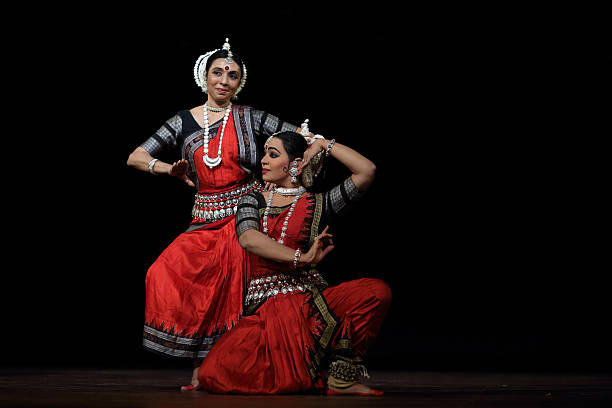

OdissiThe Ancient Dance of Odisha |
|  |
About Odissi:Odissi is one of the oldest classical dance forms of India, originating from the state of Odisha. Known for its sculpturesque poses, fluid movements, and devotion to Lord Jagannath, this dance is a blend of expressions (abhinaya) and rhythmic patterns. |